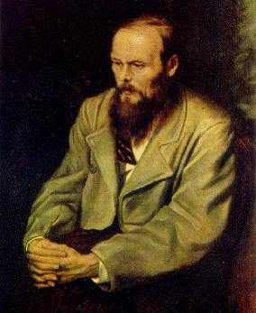

Pour bien écrire, il faut souffrir, souffrir
DOSTOЇEVSKY
Cùng nhi hậu công
ÂU DƯƠNG TU
Ảnh

Dostoïevsky (1821-1881)[1]
Trong đại chiến vừa rồi, giới đọc sách và chơi sách ở Sài Gòn thường gặp nhau ở một tiệm ở góc đường Gia Long và Thủ Khoa Huân ngày nay[2]. Lúc đó sách báo ngoại quốc không nhập cảng được, người ta phải tìm những sách báo cũ để đọc. Chủ nhân kiếm sách báo cũng ở đâu mà tài thế, luôn mấy năm tiệm lúc nào cũng đầy và thỉnh thoảng thấy bày những bộ rất quí. Chính ở đó tôi đã tìm được cuốn Le roman Russe (Tiểu thuyết Nga) của E.M de Vogue[3]. Giá năm cắc, mà bây giờ có ai bán 500 đồng tôi cũng mua liền. Tôi chưa thấy một cuốn phê bình văn chương nào làm cho tôi say mê như cuốn ấy. Đọc xong, tôi cất kỹ, tính sau sẽ dịch, nhưng rồi phải tản cư; đến khi về thì sách không còn. Không biết nó ở đâu hay đã trở về với tro bụi? A! Sách mà cũng phong trần nhỉ?
Tác giả là người Pháp, hình như có máu Nga, làm lãnh sự ở Nga trong một thời gian khá lâu, giao thiệp với nhiều văn thi sĩ Nga, đem tất cả tấm lòng yêu văn học và dân tộc Nga để viết cuốn đó mà theo tôi tới nay vẫn chưa có cuốn nào hơn. Đọc nó, tôi trông thấy những cánh đồng tuyết mênh mông, trên đó văng vẳng tiếng chuông nhà thờ và tiếng nhạc của những con chó kéo xe trượt băng; trông thấy nét mặt căm hờn, thái độ khúm núm của các nông nô Nga, và tưởng như sống chung cái đời lúc nào cũng thắc mắc, hối hận, sôi nổi, đầy tội lỗi mặc dầu tâm hồn thì đầy cao cả của những văn hào Nga ở thế kỷ thứ 19.
Tôi nhớ Vogue không khen Dostoïevsky bằng Tolstoi, bằng Tourguéniev[4]. Trong một bức thư cho nhà xuất bản Plon (Pháp), ông chê cuốn Ba anh em Karamazov (Les frès Karamazov) của Dostoïevsky là kém, nặng nề, lê thê, đọc rất chán, và khuyên nhà xuất bản đó dịch cuốn Địa ngục trên trần (Souvenirs de la maison des morts). Ông đã lầm, và cả thế hệ Pháp của ông cũng lầm như ông. Hồi đó người Pháp chưa biết thích Dostoïevsky, mãi qua đầu thế kỷ này người ta mới biết thưởng thức văn hào đó, và danh Dostoïevsky mỗi ngày một tăng, bỏ xa Tourgéniev, muốn lướt Tolstoi. Các nhà phê bình ngày nay cho Tourgéniev là không thuần tuý Nga, chịu ảnh hưởng của Tây Âu nhiều quá, hời hợt, kém sâu sắc, mạnh mẽ; chê Tolstoi là đôi khi rườm, cổ lỗ, ngây thơ, truyện nào cũng xem tiểu sử mình vô cho được. Hai nhà đó chỉ có tài thôi; đáng gọi là thiên tài chỉ có Dostoïevsky, mà khắp thế giới, có thể đứng ngang hàng với Shakespeare thì cũng chỉ có Dostoïevsky, vì chỉ trong kịch của Shakespeare và trong tiểu thuyết của Dostoïevsky ta mới gặp những tính mãnh liệt phi thường, những tâm hồn đau khổ, và thành thực một cách đáng sợ, những thắc mắc, u ẩn của nội tâm mà không ai tả nổi hoặc có gan tả ra, một bút pháp mới mẽ kì dị, vượt hẳn các quy tắc, tới cái mức gần như cuồng loạn. Hơn Shakespeare, hơn cả Tolstoi, Dostoïevsky đã nêu lên được trong tác phẩm nhiều vấn đề hoang mang về chính trị, xã hội, tôn giáo.
Henri Troyat trong cuốn Dostoïevsky (Arthème Fayart – 1940) nói: “Đọc xong Ba anh em Karamazov của ông, chúng ta thành những con người khác trước. Trước kia chúng ta tưởng mình đã cấm rễ sau trong một thế giới già cỗi mấy ngàn năm mà những luật khoa học, những lễ giáo, tập tục xã hội là thiêng liêng, bất đi bất dịch. Và thình lình, cảnh trí nghiêng ngã hết, sụp dưới chân ta. Xung quanh chúng ta ta toàn là những vực thẳm”. Cảm giác đó đúng. Bất kỳ trong truyện nào, Dostoïevsky cũng nắm tay ta kéo tới và chỉ cho ta nhìn những vực thẳm tâm hồn của nhân loại. Mà sở dĩ ông thấy được những sự đó, chính vì ông đã rớt xuống đó, dẫy dụa trong đó gần trọn đời ông.
°
° °
Coi tướng ông cũng biết là con người cực khổ. Lưỡng quyền nhô ra, hai má hóp lại, da xạm, mắt sâu hoắm, vẻ mặt như người nông phu, gần như một kẻ hành khất. Gia đình ông không được giàu như Tolstoi nhưng cũng vào hàng quý phái, phong lưu: cha làm giám đốc ở một bệnh viện ở Moscou (ông sanh ở bệnh viện đó ngày 30-10-1821)[5]; mẹ vốn dòng dõi phú thương. Đáng lẽ ông được sung sướng, nhưng chỉ vì tính keo kiết, và tàn nhẫn của thân phụ, mà ba anh em ông (ông thứ nhì tên là Fédor, anh là Michel, em là André)[6] sống trong những ngày buồn tẻ, sợ sệt, hễ nghe tiếng quát của tháo của cha là run rẫy, nép vào lòng mẹ.
Năm mười sáu tuổi thân mẫu mất, ông thi đậu vào trường Công binh. Ngồi xe với cha tới Péterbourg, ông mục kích một cảnh thương tâm: một người cai trạm bạt tai một tên đánh xe, tên này nổi điên, quất túi bụi vào mặt con ngựa như trả thù, vừa quất vừa la: “Mầy không kéo được hả, thì mầy cũng phải kéo. Chết thì chết đi, nhưng phải kéo đã”. Nghĩ cảnh mấy anh em mình, rồi nghĩ cảnh con ngựa, ông thấy rõ nỗi khổ trên trần. Và cho rằng càng đau khổ càng cao quý, càng gột được hết tội lỗi. Tư tưởng đó ám ảnh ông suốt đời.
Chương trình trường Công binh rất nặng, kỷ luật lại nghiêm. Thân phụ ông lúc đó goá vợ[7], tính tình càng khó chịu, bỏ thí các con, dư tiền mà không gởi cho con; nhiều lần Fédor tập trận về không tiền mua trà uống sinh ra oán cha, than thở với anh là Michel: “Em có một dự định: thành một thằng điên”. Hai anh em đều thích văn thơ, hăm hở đọc Hofmann, Balzac, Goethe, Hugo, Schiller, Racine, Corneille.
Năm 1939 thân phụ ông gần như điên, tàn ác không tưởng tượng được, suốt ngày đánh đập nông dân. Họ gặp ông mà không chào thì ông quất; mà chào thì ông cũng quất: “À, mầy cất cái mũ để rồi lạnh đầu lạnh cổ, đau, khỏi làm việc hả?”. Chịu không nổi, họ lập mưu ám sát ông. Cả nhà hay mà không dám đưa ra toà, sợ nếu trừng trị mấy người chủ mưu thì cả đám 500 nông dân sẽ phản kháng, nổi dậy đập phá, hoặc đi nơi khác hết. Hay tin cha chết, Dostoïevsky hối hận, tự cho mình là phạm tội vì đã có lần nguyền rủa thầm thân phụ. Tâm trạng đó sau này ông tả rất hay trong truyện Ba anh em Karamazov, có ý như để chuộc tội.
Năm 1843, Fédor thi đậu ra trường, làm thiếu uý trong một phòng vẽ của bộ Quốc phòng. Ngoài một số lương còn lãnh một số huê lợi về gia tài do một người anh rể quản lý gởi cho, nhưng tánh tiêu hoang, lại không biết tính toán, để cho người ta ăn bớt, ăn cắp nên lúc nào cũng túng tiền. Hồi đó, thi hào Balzac qua Nga chơi, trí thức và thanh niên Nga đón tiếp trọng hậu. Fédor vẫn ngưỡng mộ Balzac, dịch cuốn Eugénie Grandet để giới thiệu với đồng bào.
Rất ghét nghề đeo lon, ngồi vẽ cầu cống, năm sau ông viết một bức thơ cho Michel, trong đó có câu: “Khi người ta phí cái thời quý nhất của đời mình vào những công việc vô nghĩa lý như vậy thì sống chỉ là khổ”, rồi đệ đơn từ chức.
Ông trả nhà, kiếm chỗ khác cho đỡ tốn thì may gặp bạn học cũ là Grigorovitch, hiện đương viết văn, làm báo. Ông về ở chung với bạn, chính trong thời gian đó ông viết tiểu thuyết đầu tay: “Những kẻ đáng thương” (Les pauvres gens).
Truyện viết theo thể thư từ. Một công chức ngạch thấp, độc thân, già, nghèo, thuê một phòng đối diện với phòng một thiếu phụ cũng nghèo, cũng độc thân, nhưng có học. Hai người có họ hàng xa với nhau, nhưng không dám đi lại thăm nhau sợ thiên hạ dị nghị, chỉ viết thư san sẻ nỗi buồn khổ lẫn cho nhau. Thiếu phụ dạy ông bạn già sửa văn, và ông này tìm cách giúp đỡ cô trong lúc túng thiếu, hoặc trong mọi công việc lặt vặt. Nhưng rồi một người giàu có hỏi cưới cô thiếu phụ; nàng nhận lời mà không nghĩ gì tới cái khổ tâm của ông bạn già, gần tới ngày cưới, lại còn nhờ ông mua sắm, sửa soạn hôn lễ cho mình. Ông chua sót trong lòng mà vẫn vui vẻ làm hết mọi việc. Tới lúc nàng sắp lên xe hoa, ông trao cho nàng một bức thư mà giọng như nghẹn ngào, nứt nở: “Không thể nào bức thư này là bức thư cuối cùng… Có lẽ nào thư từ chúng ta lại ngừng thình lình như vậy được?... Không, tôi cũng sẽ còn viết thư cho cô và cô cũng sẽ viết thư cho tôi… Cô Veranka, văn tôi lúc này đã thành hình rồi. Chao ôi! Nói làm chi tới văn! Lúc này đây tôi có biết là tôi viết gì đâu, chẳng hiểu biết là viết gì hết, tôi chẳng biết chút xíu gì cả, tôi không đọc lại, tôi không sửa văn nữa. Tôi chỉ nghĩ tới viết cho cô thôi, viết cho cô thật nhiều… Ôi, bạn yêu quý của tôi, em, em…”. Truyện chấm dứt ở đó.
ẢNH
http://upload.wikimedia.org/wikipedia/commons/d/dd/Dostoievski_-_Les_Pauvres_Gens.djvu
Trang cuối cuốn Les pauvres gens
(Bản Pháp dịch của Victor Derély)
(Nguồn: http://commons.wikimedia.org/w/index.php?title=File:Dostoievski_-_Les_Pauvres_Gens.djvu&page=291)
Grigorovitch đọc tới bức thư ấy, ôm lấy bạn mà khóc, đem ngay bản thảo lại khoe thi sĩ Nékrassov. Nékrassov mới đầu nghi ngờ, bảo hãy đọc thử mươi trang xem sao, rồi mãi say mê, đọc luôn tới hết, nước mắt chảy ròng ròng, miệng không ngớt khen: “Thiên tài! Thực là một thiên tài!”.
Hôm sau, Nékrassov đưa bản thảo cho nhà phê bình Biélinsky, bảo: “Một Gogol[8] thứ nhì mới ra đời”. Biélinsky bĩu môi: “Ở nước mình, Gogol mọc như nấm”, nhưng khi đọc xong, nhắn Nékrassov mời tác giả lại chơi tức thì.
Dostoïevsky rụt rè vào, Biélinsky khen: “Phải là nghệ sĩ cảm xúc mạnh mới viết được một tác phẩm như vậy”. Trên đường về Dostoïevsky lảo đảo, bước không vững, tự hỏi: Có thể nào tài của mình lớn như vậy ư?
Bản thảo truyền tay các nhà văn, ai cũng khen là một “tài hoa chớm nở”, ngay Tourguéniev cũng thích, và Dostoïevsky được các giới trí thức, quý phái Saint Péterbourg tiếp đón nồng nhiệt. Cổ nhân nói nhỏ tuổi mà đỗ cao là bất hạnh. Nhỏ tuổi mà nổi danh bất hạnh càng lớn. Càng được nhiều người khen, Dostoïevsky càng sinh ra tự đắc, lố lăng, làm cho người xung quanh không chịu nổi. Truyện Những kẻ đáng thương xuất bản rồi, ông viết truyện Hai mặt (Le double), chủ trương rằng mỗi con người có phần thiện và phần ác và hai phần đó luôn luôn xung đột nhau. Tác phẩm đó cũng như tiểu thuyết Người thuê phòng (Le logeuse) đều bị chê là kém và những người trước ngưỡng mộ ông lần lần xa ông.
°
° °
Hồi Dostoïevsky mới bốn tuổi, ở nước Nga có một cuộc vận động để cải cách chính thể. Một nhóm nhà cách mạng ở Saint Péterbourg muốn đổi nền quân chủ độc tài ra nền quân chủ lập hiến, bãi bỏ chế độ nông nô và chính sách thể hình. Họ chưa bạo động, mới chỉ hô hào, thì quân đội Nga hoàng đàn áp, giết một số, còn bao nhiêu thì đày qua Sibérie. Vụ đó xảy ra tháng chạp năm 1825, cho nên trong lịch sử gọi là vụ tháng chạp.
Nhưng trong lịch sử nhân loại có bao giờ chỉ dùng võ lực mà diệt nỗi tư tưởng cách mạng đâu. Các nhà trí thức Nga so sánh chế độ lạc hậu của nước mình với chế độ tương đối tự do, duy tân của các nước Ây Tây thì không thể nào không bất bình, không mong mỏi ít nhiều cải cách. Pétrachevsky là một trong những người đó. Ông là một công chức, họp một nhóm đồng chí để bàn về chính sách chính trị. Dostoïevsky nhập bọn. Họ chỉ mới “thanh đàm” về thời cuộc chứ chưa có chương trình hoạt động mà cũng chẳng tuyên thệ gì cả. Chưa thành một hội kín nữa. Nhưng rồi xảy ra nhiều vụ nông dân nổi dậy giết các lãnh chúa tàn nhẫn, kế đến, cách mạng 1848 ở Pháp vang vội tới Nga. Hoàng đế Nicolas đệ Nhất đâm hoảng, ra lệnh cho công an phải hoạt động mạnh, và một đêm, Dostoïevsky đương ngủ ở nhà thì có lính tới lục soát rồi lôi đi, đem nhốt ở pháo đài Pierre et Paul. Ông cho là người ta bắt lầm, sớm muộn gì cũng được thả nên cứ ung dung viết tiểu thuyết mới. Một tuần, hai tuần, cả tháng cũng chẳng thấy gì. Không phải là lầm rồi. Người ta buộc tội ông thật. Ông nghĩ: “Vô lý quá! Nếu phát biểu vài ý kiến chính trị trong đám bạn bè thân mật mà cũng bị khép tội thì người nào thoát được tội?”. Nhưng toà án không cho vậy là vô lý, mà tuyên bố rằng nội cái ý làm cách mạng cũng đủ buộc tội rồi, và quyết định xử tử một số non 20 người.
Ngày 21-12-1849 Dostoïevsky bị đưa ra pháp trường với một số tội nhân khác nữa.
Họ ngơ ngác hỏi nhau:
- Ủa, người ta đem bắn chúng mình chăng?
- Có lý nào? Tội gì mà bắn?
Một lát sau, một vị linh mục tới để làm lễ thánh thể. Họ không nghi ngờ gì nữa, la lên: “Tôi không đáng tội chết”. Trước sự bất công tàn nhẫn đó họ không còn biết sợ, chỉ phẫn uất và tự cho mình là những người tuẫn đạo. Dostoïevsky từ biệt bạn bè, nhìn vũ trụ lần cuối cùng, bỗng thấy một người phất một chiếc khăn, phi ngựa tới truyền lệnh ân xá, đổi tội tử hình ra tội đi đày. Phút đầu, tội nhân thấy sướng như cuồng, ôm nhau nhảy; nhưng rồi nghĩ lại, biết đó chỉ là một màn hài kịch mà Nga Hoàng đã sắp đặt rất vụng để tỏ ra ta đây đại lượng, thì họ chỉ có thái độ khinh bỉ.
Trở về khám, Dostoïevsky viết thư cho anh là Michel: “Em bị đày bốn năm, anh ạ; em không thất vọng đâu. Ở đâu, đời sống cũng là đời sống, nó ở trong bản thân ta chứ không phải ở thế giới xung quanh ta. Ở nơi tù đày thì ở bên cạnh em cũng sẽ có những con người và làm một con người ở giữa đám người, giữ được hoài như vậy dù hoàn cảnh ra sao thì ra, không nản chí bỏ cuộc; đó, đời là vậy, chân ý nghĩa của cuộc đời là vậy. Em đã lĩnh hội được rồi”.
Đêm giáng sinh năm đó, ông lên đường đi Sibérie. Tới Tobolsk, ông được thấy tâm hồn hy sinh của phụ nữ Nga. Họ là vợ con của những nhà “Cách mạng tháng chạp”, bỏ nhà cửa, quê hương, theo chồng cha tới nơi xa xôi này để săn sóc, an ủi người thân. Hàng trăm gia đình toàn đàn bà sống đoàn kết với nhau như một nhà, chia tất cả các gian lao với nhau, và mỗi khi có một đoàn tội nhân tới, thì họ đón tiếp niềm nở. Dostoïevsky được họ tặng một cuốn Phúc âm, rồi tiễn chân một khúc đường. Khi từ biệt họ, ông bùi ngùi như từ biệt mẹ hay em, nhớ lại đời xa hoa ở Saint Péterbourg mà ân hận. Những vị vợ hiền đó làm cho ông tin ở tương lai dân tộc Nga và ông thấy rằng đàn ông không thể làm được việc gì lớn nếu không có sự hy sinh của đàn bà.
Người ta giải bọn ông tới pháo đài
Tháng 2 năm 1854, người ta đem búa vào tháo xích sắt cho ông. Tiếng búa rang rảng, xích rớt xuống đất! Dostoïevsky lượm lên, ngắm một hồi lâu, rồi nhìn xuống vết thẹo ở chân do xích cà vào, mà bùi ngùi; nhìn bước đường sau này mà ngại: sức đã suy, cơ thể đã già mà bây giờ phải chiến đấu, đau khổ để làm lại cuộc đời từ tên lính nhì! Nhưng nghĩ tới những bài học ở trong ngục, ông tin tưởng được một chút: trong bốn năm ông đã hiểu được bài học bác ái trong Phúc âm, đã tin ở dân tộc Nga, một dân tộc mà tinh thần hy sinh, nhẫn nại của phụ nữ rất cao. Một dân tộc mà “bề ngoài tưởng là rác nhưng trong thì là vàng”. Và ông nhất quyết sẽ phụng sự dân chúng Nga. Sau này, có ai bắt bẻ ông: “Ai cho ông cái quyền lên tiếng thay dân tộc Nga?”, ông vén quần lên, chỉ vết thẹo ở chân, đáp: “Đây, quyền của tôi ở đây”.
°
° °
Ở ngục thất Osmk ra, ông bị đưa tới
Ít lâu sau, hay tin Issaiev chết bệnh, ông vội vàng mượn tiền của Vrangel gởi giúp Marie, rồi viết một bức thư nồng nàn để tỏ tình và xin cưới nàng. Mới đầu nàng nhận lời rồi ít bữa sau lại do dự. Ông tuy có học thức, gia đình quý phái thật đấy, nhưng tướng xấu, lại bệnh tật (cứ lâu lâu nổi cơn động kinh)[9], mà chỉ làm một tên lính thì làm sao cưu mang nổi nàng và đứa con trai nhỏ của nàng. Dostoïevsky điều tra mới hay Marie đã yêu một thầy giáo trẻ tuổi ở Kouznetzk, muốn tỏ vẻ quân tử, ông không tỏ lời trách móc gì cả mà còn muốn giúp tiền cho họ cưới nhau nữa. Chính nỗi lòng chua chát đó đã giúp đề tài cho ông viết cuốn Những kẻ nhục nhã và bị xúc phạm (Humiliés et Offensés) xuất bản năm 1861. Nhưng ý đó chưa được thi hành thì Dostoïevsky được tin đặc cách thăng chức thiếu uý nhờ sự vận động của Vrangel ở Saint Péterbourg. Ông chạy đi vay ngay 600 rúp (Nga kim) rồi tức tốc lại Kouznetzk báo tin cho Marie và một lần nữa xin cưới nàng. Ông hứa thế nào
Từ đó cuộc sống chung của hai người chỉ là một bi kịch, vợ lúc nào cũng quạo quọ, gây gổ, chồng lúc nào cũng chán chường, chua chát.
Sống ở
Năm 1857, ông được giải ngũ, rồi năm 1859 được phép trở về Nga, mới đầu tại Tver, sau nhờ sự vận động của bạn bè, được về Saint Péterbourg, sau mười năm cách biệt. Lúc đó Nga Hoàng Nicolas đệ Nhất đã mất.
Về Péterbourg được một năm, ông xuất bản cuốn Địa ngục trên trần. Tác phẩm đó làm cho biết bao người Nga sùi sụt, từ vua chúa tới thường dân. Cả một dân tộc kinh khủng thấy rằng dưới cái bề mặt phẳng lặng, rực rỡ của xã hội, lại có những cảnh rùng rợn không kém cảnh địa ngục tả trong thi phẩm bất hủ Thần linh hài kịch (pine comédie) của Dante. Người ta không tưởng tượng nổi một xã hội đã có ngàn năm văn hiến, một xã hội thờ đức Chúa Kytô, mà có những kẻ thông minh đạo đức bị hành hạ ghê tởm như vậy chỉ vì khác chủ trương với nhà cầm quyền, chỉ vì thành tâm cầu hạnh phúc cho đồng bào. Cảnh những thân thể loã lồ đi đi lại lại bên cạnh một lò hấp nồng nặc hơi nước hôi thối, cảnh tra tấn đến vọt máu, đến chết giấc, cảnh tội nhân bị gọt đầu một nửa, chân đeo xích lên sân khấu diễn những hài kịch mua vui cho bạn, làm cho độc giả khâm phục thiên tài tả thực của Dostoïevsky và danh ông, đã không được ai nhắc tới trong mười năm, bỗng vang lên khắp nước.
Ông cùng với người anh là Michel cho ra tạp chí Thời báo. Viết suốt đêm, ngày nghỉ. Thỉnh thoảng lại lên cơn động kinh. Mỗi lần như vậy, trước khi lên cơn, ông được hưởng vài giây xuất thần khoan khoái lạ lùng[10]; nhưng tỉnh cơn rồi thì mệt mỏi quên hết mọi việc, phải nghỉ vài ngày rồi mới lần lần nhớ lại. Bạn bè phải giúp ông, đọc những đoạn văn viết sau mỗi cơn động kinh, thấy chỗ nào mâu thuẫn hoặc không liên tiếp với đoạn trên thì cho ông hay để sửa lại.
Năm 1862 vừa mệt vừa chán (cuốn Những kẻ nhục nhã và bị xúc phạm không được hoan nghênh), ông du lịch ngoại quốc, để vợ ở nhà. Ông thăm Ba Lê, Luân Đôn, Genève,
Năm sau, ông lại đi du lịch, lần này với một tình nhân, nàng Pauline Souslova.
Năm 1864 vợ chết, rồi anh là Michel cũng chết. Dostoïevsky lãnh hết những món nợ của anh, lại nhận nuôi con cho anh. Ông làm việc như trâu: một mình trông nom tờ báo, rồi viết bài, viết sách. Có những món nợ phải trả gấp, ông phải thương lượng với một nhà xuất bản để bán non bản quyền. Nhà xuất bản đó bất lương đến nỗi cứa cổ ông một cách tàn nhẫn không tưởng tượng được: đưa cho ông ba ngàn rúp, và bắt ông bán đứt bản quyền hết thảy những tác phẩm viết từ trước; lại phải viết một tác phẩm để giao cho y trước ngày mùng một tháng mười một[11] năm 1866, nếu không thì Dostoïevsky sẽ mất hết bản quyền về những tác phẩm hiện đang và sẽ viết. Nói một cách khác là nếu tới hạn mà ông không viết kịp thì đành liệng cây bút đi, kiếm nghề khác mà sống, chứ viết để làm gì nữa, còn chút bản quyền nào đâu? Quẫn bách quá, ông đành đưa đầu vào tròng cho hắn thắt, nhưng độc giả sẽ thấy chính cái rủi đó lại hoá may, và tờ hợp đồng kỳ dị đó đã thay đổi hẳn đời ông sau này.
Trả hết những món nợ gấp cho anh, thu xếp xong chỗ ăn chỗ ở cho các cháu và đứa con riêng của vợ, ông lại đi du lịch ngoại quốc và từ đây bắt đầu quãng đời lang thang, cơ hàn đê nhục nhất của Dostoïevsky.
Chỉ tại cái máu cờ bạc của ông. Tới tỉnh nào có sòng bạc lớn, ông cũng ghé, rồi la cà suốt đêm ngày ở bên tấm thảm xanh, say mê trong cuộc đen đỏ. Hễ được thì tiêu xài trong vài ngày, lại tiệm cầm đồ chuộc quần áo, rồi khi thua cháy túi thì cầm đồ đạc, nhịn đói, viết thư xin tiền, chịu những cảnh rất nhục nhã. Có một lần chủ một khách sạn mắng vào mặt ông: “Chú không cần ăn vì chú không biết kiếm ăn. Tôi sẽ bảo bồi pha trà cho chú. Thế thôi”. Ba ngày như vậy, sáng tối chỉ có trà, mà ông không thấy đói, chỉ oán chủ khách sạn không đốt cho ông một cây nến để cho ông viết. Ông gởi đi khắp nơi những bức thư không dán cò – tiền đâu mà mua cò? – giọng như mếu, như khóc, năn nỉ, van lơn, thề sống thề chết sẽ không dám quấy rầy nữa, sẽ chừa hẳn, không cờ bạc nữa, để xin năm mười rúp. Các tiệm cầm đồ nhẵn mặt ông, các ngân hàng cũng nhẵn mặt ông vì ngày nào ông cũng khoát áo lem luốc, vác bộ mặt thiểu não lại hỏi đôi ba lần xem thư gởi tiền cho ông đã tới chưa.
Càng túng lại càng phải viết cho nhiều để trả nợ, vì chủ nợ thúc mỗi ngày mỗi gấp. Trong nhật ký, ta thấy đoạn này:
“Làm sao tôi có thể viết được bây giờ? Tôi đi đi lại lại trong phòng, tôi bứt tóc và ban đêm tôi không ngủ được. Tôi nghĩ đến cảnh cùng quẫn mà tôi hoá điên! Và tôi đợi! Trời ơi, tôi thề rằng không thể nào tả tỉ mỉ nỗi cơ hàn của tôi lúc này! Nghĩ tới mà xấu hổ… Vậy mà người ta buộc tôi phải viết cho có nghệ thuật, phải trong trẻo, phải nên thơ một cách tự nhiên, không cuồng nhiệt, và người ta bảo tôi phải noi gương Tourguéniev với Gontcharov! Sao họ không xét giùm hoàn cảnh của tôi làm việc ra sao!”.
Nhưng rồi ông cũng viết xong và cẩn thận bộ Tội lỗi và hình phạt (Crime et Châtiment – xuất bản năm 1866) dày năm trăm trang. Raskolnikov, một sinh viên nghèo, tự đắc, tìm cách thoát cảnh túng bấn. Chàng thấy một mụ già giàu có, chuyên sống về nghề cho vay nặng lãi, nảy ra ý giết mụ. Chàng nghĩ: “Mụ đó hút máu xã hội như một con chí. Để cho mụ sống chỉ hại cho xã hội. Giết mụ rồi dùng tiền của mụ để giúp mẹ chàng, em gái chàng, để tiếp tục sự học của chàng rồi sau này thành tài, giúp lại những người khác, như vậy có phải là hữu ích hơn không: diệt một mạng để cứu cả ngàn mạng khác”. Nghĩ vậy, chàng thực hành ý định, ám sát mụ già và vì bắt buộc giết luôn cả người chị (hay em) của mụ, vơ vét hết tiền nong, vàng bạc, trốn khỏi, không lưu lại dấu vết gì cả, thành thử công an và tư pháp không kiếm ra được thủ phạm.
Nhưng chàng không được yên ổn sống. Vài bữa sau hình phạt của lương tâm bắt đầu. Mỗi ngày lương tâm cắn rứt một chút, rồi lần lần chàng tìm thấy được nguyên do đích xác của tội lỗi: chàng giết người không phải vì mụ đó đáng ghét, không phải vì mẹ chàng và em chàng nghèo, không phải vì chàng muốn giúp xã hội, mà cũng không phải vì chàng cần tiền. Chàng giết người vì chàng tự đắc, tự cho mình là cao cả không cần phải theo luân lý của quần chúng. Chàng cũng như Nã Phá Luân, hoặc những nhà độc tài, tin rằng mục đích đủ biện hộ cho phương tiện. Nhưng chàng đã lầm, giết mụ già mà chính là tự giết mình, diệt cái “ánh sáng thần linh” trong bản thân mình. Và chàng ân hận nhận rằng một nhân mạng dù thấp hèn đến đâu cũng có giá trị hơn một tư tưởng trừu tượng dù là cao cả. Không có mục đích nào biện hộ cho sự giết người được, vì một người, dù độc ác, dù vô ích cho xã hội, cũng là hình ảnh của Thượng đế, cũng được Thượng đế yêu thương, không nỡ bỏ.
Muốn cho vơi nỗi lòng, chàng thú tội với một gái điếm, tên là Sonia. Sonia khuyên chàng thú tội với cảnh sát để chịu sự trừng phạt. Chàng nghe lời, ra ty Cảnh sát tự thú… Toà án đày chàng đi Sibérie. Sonia đi theo. Sự ân hận đã chuộc được tội cho Raskolnikov.
Tiểu thuyết Tội lỗi và hình phạt được mọi giới hoan nghênh, vì vừa là một truyện trinh thám (truyện trinh thám đầu tiên có giá trị của nhân loại), vừa là một truyện tình cảm, lại là một luận đề luân lý.
°
Ngày mùng một tháng 10 năm 1866 (lúc đó ông đã về nước) ông sực nhớ rằng chỉ còn một tháng nữa phải giao cuốn tiểu thuyết cho nhà xuất bản đã đưa cho ông ba ngàn rúp hồi hai năm trước. Mà ông chưa viết được một trang nào, cũng chưa nghĩ được cốt truyện. Ông quên bẵng hẳn đi. Ông lýnh quýnh, hoảng hốt nói với bạn:
- Thôi, chết rồi. Hỏng cả đời tôi rồi. Đây anh coi tờ hợp đồng này thì biết. Làm sao giữ hẹn được bây giờ?
- Thế này thì nguy thật. Có một cách là nghĩ cốt truyện đi, rồi kể sơ cho bốn năm bạn thân, nhờ mỗi người viết tiếp cho anh một chương, như vậy mới kịp được.
- Nhờ người khác viết rồi ký tên tôi? Không khi nào tôi chịu như vậy.
Người bạn suy nghĩ một lát rồi nói:
- Còn một cách nữa: anh đọc cho người khác chép bằng tốc ký rồi người đó đánh máy lại.
Dostoïevsky bằng lòng, ông kiếm một cô có tốc ký, gia đình khá giả mới 20 tuổi, tên Anna Grigorievna, và ngay hôm đó, Dostoïevsky bắt đầu sáng tác bằng miệng tiểu thuyết Con bạc (le jouer)[12] trong đó ông tả những ngày ham mê cờ bạc khi du lịch Tây Âu với Pauline Souslov. Ông đi đi lại lại trong phòng, đọc rất nhanh đến nỗi cô Anna ngày đầu chép không kịp, muốn khóc. Ít bữa sau cô quen lần và tới người 30-10, thì tác phẩm đánh máy xong, sửa chữa xong, ông đem lại cho nhà xuất bản nhưng hắn đi vắng. Ông tinh ý, hiểu mưu gian của hắn, đi thẳng lại ty Cảnh sát, kể rõ đầu đuôi, giao cho Cảnh sát trưởng, lấy biên lai, như vậy nhà xuất bản không thể kiện ông vào đâu được.
Sau một tháng làm việc chung với cô Anna, Dostoïevsky thấy yêu cô, giữ cô lại làm thư ký đánh máy. Ông muốn hỏi cô làm vợ, nhưng cũng như Tolstoi, ông ngượng ngùng chỉ sợ bị từ chối: người ta con nhà tử tế, có học, còn hơ hớ cái xuân, mà mình thì hỡi ơi! Đã 44 tuổi lại goá vợ, phải gánh vác hai gia đình mà lại nghèo, lại cờ bạc. Ông do dự lâu lắm rồi dùng một kế, một kế không nên thơ như kế hỏi vợ của Tolstoi, nhưng cũng là tài tình, chỉ một tiểu thuyết gia mới nghĩ nổi. Ông hỏi cô:
- Cô Anna này, tôi mới nghĩ xong một cốt truyện nhưng còn một đoạn về tâm lý tôi giải quyết không được, cô giúp tôi nhé?
Cô mừng lắm. Được một đại văn hào mời góp ý kiến thì còn gì vinh dự cho bằng? Cô đáp:
- Em sẵn lòng lắm, chỉ sợ không giúp được cho ông thôi.
- Tôi chắc cô giúp được, vì là vấn đề tâm lý của một thiếu nữ như cô. Trước kia, hễ viết về thiếu nữ thì tôi hỏi một cô em họ tôi, nhưng nay cô ấy ở xa nên tôi phải hỏi cô. Truyện như vầy: một hoạ sĩ không còn trẻ… tuổi cũng vào khoảng tuổi tôi vậy… sống cô độc, khổ sở lắm, chỉ ước ao trời ban cho một chút hạnh phúc, được an ủi một chút… rồi tình cờ gặp một thiếu nữ, thông minh, nhu mì, đa cảm. Vấn đề tâm lý ở chỗ này: thiếu nữ đó có thể thành thực yêu hoạ sĩ đó được không? Một hoạ sĩ có tài… Thí dụ hoạ sĩ đó là tôi đi, còn thiếu nữ đó là cô đi, và tôi… thú thực lòng tôi với cô, thì…
- Thì em sẽ trả lời rằng: Em yêu ông, sẽ yêu ông suốt đời.
Đúng là một trang tiểu thuyết. Song thân cô Anna trọng tài Dostoïevsky bằng lòng gã con, nhưng họ hàng ông thì tỏ ý phản đối, một phần vì tư lợi (họ sợ tác quyền của ông sẽ về tay người khác), một phần vì ngại cho hạnh phúc của ông (chồng già, vợ trẻ như vậy thì hoà thuận với nhau sao được).
Ông nhất định theo ý mình: năm sau (1887) làm lễ cưới, và đó là một điều đáng mừng cho ông. Lạ lùng thật! Hai văn hào bậc nhất Nga, Tolstoi và Dostoïevsky đều có những bà vợ rất trẻ, các bà không hiểu gì nhiều về văn chương nghệ thuật, nhưng đều giúp chồng được nhiều trong cuộc sáng tác, bà Tolstoi thì chép lại bảy lần bộ Chiến tranh và Hoà bình còn bà Dostoïevsky thì suốt mười mấy năm, đánh máy tác phẩm cho chồng, cả hai đều có óc thực tế, biết tính toán, trong nom việc nhà. Nhưng Tolstoi khổ vì vợ thì trái lại Dostoïevsky làm cho vợ khổ.
Cô Anna nhà chỉ khá giả chứ không giàu. Mới cưới xong cô phải xin cha mẹ một số tiền để trả bớt nợ cho chồng. Nhưng con nợ nhiều quá, ngày nào cũng tới thúc, ông lại tính tới việc đi du lịch ngoại quốc để trốn nợ.
°
° °
Hai ông bà xa quê lần này tới bốn năm. Tới
Stéfan Zweig bảo ông đánh bạc không phải vì tham tiền, mà vì muốn tìm những cảm xúc mãnh liệt, muốn sống một cách thực say mê, muốn được hưởng cái thú rờn rợn của một kẻ “đứng trên đỉnh một ngọn tháp cao, nghiêng mình ngó xuống vực thẳm”. Lời đó đúng. Chính Dostoïevsky trong truyện Con bạc cũng tự thú: “Tôi thấy hình như có một dục vọng phá mưu toan của định mạng, ngạo mạn, thách đố định mạng”. Hình như ông nghĩ rằng đời đã bắt mình nghèo khổ hoài, thì thôi chẳng cần gì nữa, chơi cho thua hết đi, xem cái nghèo túng cùng cực nó ra sao.
Ông bỏ bà vợ trẻ mới cưới nằm ở khách sạn để đi đánh bạc thâu đêm. Có khi ông đi tới một tỉnh khác để tìm sòng bạc, cả tuần mới về với vợ một lần, mà lần nào về, mặt cũng bơ phờ, túi cũng rỗng tuếch. Ông quỳ xuống, khóc lóc, năn nỉ: “Mình tha lỗi cho anh, đừng coi anh như đồ chó má. Anh đã mang một tội lớn. Anh đã thua hết, hết nhẵn rồi”. Nhưng chỉ hôm sau, hay ngay hôm đó, ông lại xin bà một số tiền nữa để đem nướng. Nướng hết rồi lại trở về, rồi lại khóc lóc, năn nỉ, ân hận, hứa đủ thứ, cũng chỉ giữ lời được vài ngày rồi đâu lại vào đó. Như vậy trong bốn năm. Ta thử tưởng tượng nỗi khổ của bà ra sao. Ở xứ lạ quê người, con thì mới sanh (con gái đầu lòng sanh năm 1867, được ít tháng rồi chết) mà chồng thì suốt đêm mê mẫn trong cuộc đen đỏ, có lần ông cầm bán hết tư trang, quần áo của bà và hai ông bà sống trong cảnh đói rét, thất vọng, muốn hoá điên trong một tháng! Đúng như Stéfan Zweig nói: Dostoïevsky trong mấy năm đó như bị ma dắt lối, quỷ đưa đường vậy. Nhưng Stéfan Zweig có ý bênh vực ông, bảo chúng ta không nên lấy quy tắc luân lý trưởng giả, nhỏ mọn, hẹp hòi mà xét các thiên tài. Jacques Madaule, trong cuốn Dostoïevsky (Editions Universitaires 1956) ngược lại, cho rằng “đời sống một văn hào là một đời sống lạ lùng thật, nhưng nó không có lợi gì cho ta hơn đời một thường nhân là bao nhiêu”, “và từ một đời như đời Dostoïevsky, ta chỉ rút ra được cái gì tầm thường thôi”, vậy “chỉ có tác phẩm là đáng kể” chứ không phải là đời sống của tác giả.
Tôi nghĩ khác hai nhà phê bình đó. Hễ có tài thì có tật. Nhất là nghệ sĩ phương Tây thường có nhiều tật hơn nghệ sĩ phương Đông. Ta không thể so sánh họ với các vị thánh được, ta không thể trách họ sao không có đạo đức như Khổng Tử, Thích Ca được, nhưng ta thấy họ có tật, thì ta vẫn có quyền chê vì chính họ cũng xấu hổ về những yếu đuối của họ. Còn như bảo đời của họ chỉ cho những bài học tầm thường thì cũng không đúng hẳn. Dù họ có truỵ lạc như Tolstoi, Dostoïevsky, thì tâm hồn họ cũng có những vẻ đẹp đáng cho ta soi, mà những vẻ đẹp đó ở những người thường không làm cho ta cảm xúc mạnh bằng ở những danh nhân, vì vậy mà ta thích đọc tiểu sử danh nhân hơn là những thường nhân. Nếu ta lại học được tinh thần của Khổng Tử trong câu “Tam nhân đồng hành, tất hữu ngã sư yên” thì tôi tưởng đọc tiểu sử của các nghệ sĩ dù là truỵ lạc, ta cũng vẫn học được rất nhiều.
Dostoïevsky đam mê cờ bạc làm đau khổ cho vợ con thật, nhưng ông có một đức rất quý là tận tâm với nghệ thuật. Ngoài cái vui bên tấm thảm xanh, ông chỉ còn biết bên tờ giấy trắng. Mà vui này cũng chua sót như vui kia.
Viết đến mệt lả, viết đến động kinh. Hồi hai mươi tuổi, ông viết truyện Những kẻ đáng thương mà nước mắt ròng ròng. Suốt đời, ông “viết bằng thần kinh, trong cơn thống khổ và lo lắng”, ông phải gắng sức hoài, mà hễ gắng sức lâu thì đau. Có lần ông than thở: “Đã ghê chưa? Tôi ngồi đây, trong ghế bành của tôi, đầu nặng như đá, tay mỏi như dần, không thể gắng sức một chút được nữa… Mà bên cạnh tôi, con bé cháu nó la… mà tôi không có tiền mua thuốc cho nó uống”. Sáng tác đối với ông là một nỗi khoan khoái mà đồng thời cũng là một cực hình. Khổ nhất là những lúc viết để trừ nợ. Biết là phải moi óc thâu đêm trong hàng tháng đằng đẵng, phải rút cả tinh tuỷ, khí huyết, để rồi giao cho người ta, chẳng lãnh được đồng nào hết, mà cũng vẫn phải viết, viết gấp cho kịp kỳ hạn nữa, và viết kỹ cho khỏi phụ cây bút nữa! Ta thương Dostoïevsky và trọng Dostoïevsky ở đó. Nội một thái độ từ chối sự giúp đỡ của bạn văn khi viết cuốn Con bạc cũng là bài học cho ta. Mà ta nên nhớ lần đó sở dĩ ông vay ba ngàn rúp là để trả nợ cho anh và nuôi các cháu. Ai bảo đời ông là tầm thường?
Ở Đức ít lâu, hai ông bà đi Genève. Tại đây ông viết truyện Chàng ngốc (L’Idiot – xuất bản năm 1868). Truyện tầm thường, nhiều đoạn không cân xứng. Nhân vật chính là một anh chàng quý phái, trẻ tuổi, nhưng ngốc, từ trước sống ngoài lề xã hội rồi bỗng lạc loài vào giữa bọn gian tham, điếm đàng, mà biến đổi được tính tình của bọn đó nhờ tính ngây thơ của mình. Truyện khó tin mà vai chính không phải là một vị thánh như Giêsu, cũng không ra vẻ một chàng Don Quichotte, thành thử lố bịch.
Sau truyện đó, Dostoïevsky viết truyện Người chồng vĩnh cửu (L’éternel mari) cũng tầm thường, và truyện Bọn quỉ (Les possédés)[13] có chút tiếng vang. Bọn quỉ đó là một nhóm người Nga theo chính sách xã hội của Tây Âu. Ta nên nhớ ông viết vào năm 1870; hồi ấy những tư tưởng mới ở Pháp chưa bành trướng mạnh ở Nga, mà trong truyện ông đã tiên đoán trước rằng nước Nga sẽ bị một cuộc cách mạng tàn phá. Ông hô hào quốc dân đừng bắt chước Tây Âu. Sau này người ta mới thấy tài tiên tri của ông. Ông cho rằng Giáo hội La Mã tham lam, muốn xen vô chính quyền, muốn chỉ huy chính quyền nên ở Tây Âu phong trào xã hội mới nổi lên để lật đổ Giáo hội, và như vậy gây mầm loạn trong quần chúng, vì theo ông “cái luật nhân sinh chỉ ở điều này: loài người phải có một cái gì mênh mông để luôn luôn có thể cúi đầu sùng bái. Nếu làm cho loài người mất cái mênh mông đó thì họ không còn muốn sống nữa. Họ sẽ chết vì thất vọng. Phương Tây (tức Tây Âu) mất chúa Giêsu (do lỗi của Giáo hội La Mã), vì vậy phương Tây đương hấp hối, chỉ vì vậy mà thôi. Ông lại nói: “Loài người đã tạo ra Thượng đế chỉ là để có thể sống mà không đâm giết nhau”. Và ông khuyên Giáo hội La Mã theo Giáo hội Nga, qui thuận chính quyền, đừng xen vô chính trị mà chỉ dùng lòng bác ái để hoàn thành sứ mạng của mình.
Những tư tưởng đó chẳng siêu việt gì, chỉ nhờ tài phô diễn, lòng nhiệt thành của Dostoïevsky mà nó có tiếng vang: phe thủ cựu hoan hô ông vì ông đả đảo chính sách gây loạn của phe xã hội mà phe xã hội cũng hoan hô ông vì ông đả đảo Giáo đường La Mã.
Viết xong hai truyện Người chồng vĩnh cửu và Bọn quỉ, ông đột nhiên bỏ hẳn tánh cờ bạc – không hiểu vì nguyên do gì – rồi về nước, viết cho tờ Công dân (Citoyen). Con nợ bu lại, hăm bỏ tù ông. Ông chỉ trơ mặt ra, không biết nói năng gì cả. Bà Anna phải che chở cho chồng, bảo họ: “Các ông cứ để nhà tôi trả các ông lần lần, nếu các ông bỏ tù nhà tôi thì chúng tôi chẳng buồn gì đâu, các ông phải nuôi cơm nhà tôi mà cảnh khám đường thì các ông còn lạ gì nữa, nhà tôi thừa biết nó rồi”.
°
° °
Năm 1874 ông lại đi du lịch Tây Âu, viết truyện Người thanh niên (Adolescent xuất bản năm 1875). Truyện tầm thường, tả tâm trạng một thanh niên vì nghèo mà bị khinh bỉ, uất ức, muốn làm giàu như các tỉ phú Mỹ, Dostoïevsky muốn chứng minh rằng luân lý của mỗi người tuỳ theo gia tài của họ. Nhờ chừa tật cờ bạc, lại nhờ tài nội trợ của bà, đời sống đã có mòi phong lưu, đỡ lo lắng. Bà đánh máy tác phẩm cho ông, thu xếp mọi việc trong nhà, giao thiệp với các nhà xuất bản, định số in, giá tiền, quyền tác giả, giữ sổ sách. Coi tập nhật ký của bà, ta không khỏi mỉm cười. Vợ một nhà văn hào mà không có chút cảm tưởng gì về tác phẩm của chồng cả, chỉ thấy ghi: hôm nay thu được bao nhiêu tiền sách, chi tiêu bao nhiêu, như vậy suốt năm này qua năm khác.
Năm 1877, Dostoïevsky làm việc rất mạnh, viết tập Nhật ký một nhà văn (Journal d’un écrivain) để đăng báo phổ biến những tư tưởng chính trị, tôn giáo, những nhận xét về dân tộc Nga và các dân tộc Tây Âu. Báo bán chạy, và ai nấy đều coi ông như bậc đàn anh trên văn đàn.
Đồng thời ông tìm tài liệu để viết bộ truyện nhan đề là Ba anh em Karamazov (Les frères Karamazov), một bộ mà ông định dùng hết tâm lục để diễn tất cả những luận thuyết của ông. Ông tra cứu, nhận xét sự làm việc của trẻ em trong các xưởng, cách dạy dỗ ở nhà trường, tình cảnh trong các viện cô nhi, có lần lại viết thư hỏi sở Hoả xa một người nằm sát mặt đất ở giữ 2 đường rây thì xe lửa chạy qua có thể thoát chết được không?
Hình như ông biết trước sẽ không thọ được lâu, nên hăng hái làm việc, vạch một chương trình trứ tác. Trong di cảo của ông, sau này người ta thấy một miếng giấy nhỏ ghi những hàng này:
“Ngày 24 tháng chạp năm 1877”.
Ghi chú:
I. Viết cuốn Candide[14] Nga
II. Viết một cuốn về chúa Giêsu
III. Viết hồi ký
IV. Làm bài thơ: Ngày thứ bốn mươi.
“Làm tất cả những công việc đó ít nhất phải mười năm mà năm nay tôi đã 56 tuổi, ấy là chưa kể tiểu thuyết tôi đang viết và tập nhật ký tôi định in”.
Ông xin mười năm, nhưng trời chỉ cho ông ba năm đủ để ông hoàn thành tác phẩm bất hủ Ba anh em Karamazov (xuất bản năm 1879) dày khoảng 700 trang. Truyện rất rắc rối, chằng chịt, phức tạp, bố cục khác hẳn các tiểu thuyết Pháp. Ta có thể tóm tắt trong mười hàng như vầy:
Ông già Fiodor Palovitch Karamazov, truỵ lạc, bủn xỉn, tàn nhẫn, có hai người vợ. Người vợ cả gia đình quý phái, lãng mạn, tàn bạo, sinh một người con trai là Dimitri, cũng tàn bạo như cha mẹ, nhưng còn có chút lương tâm. Người vợ thứ nhì thích cô liêu, thần bí, sanh được hai người con: Ivan, một chàng thông minh, hay suy nghĩ, không tin Trời, gắt gỏng; và Alexis, hiền lương, có nghị lực và tin Trời. Fiodor sau khi đi lại với một gái điếm ngu xuẩn, sanh ra Smerdiakov, tính tình đê tiện, xấu xa; Fiodor nhận hắn làm con nhưng cả nhà chỉ coi hắn như một tên đầy tớ. Hắn rất ngưỡng mộ Ivan.
Cha và hai người con là Dimitri và Ivan cùng mê một thiếu nữ tên là Grouschenka, tranh nhau vì nàng, gây ra biết bao nhiêu chuyện bỉ ổi. Sau Smerdiakov giết cha, tưởng như vậy là làm vừa lòng Ivan, vì hắn ngờ rằng Ivan muốn thế mà không dám thi hành. Rốt cuộc Dimitri bị nghi ngờ và kết tội: đi đày Sibérie. Ivan biết Dimitri vô tôi nhưng làm ngơ. Dimitri nhẫn nhục chịu, vì chàng muốn chuộc cái tội mà đã có lần chàng mong cha chết.
Và đây, luân lý của truyện mà ông mượn lời một nhân vật để phô diễn:
“Anh nên tin rằng Thượng đế yêu anh tới cái mức anh không tưởng tượng nổi. Người yêu anh trong tội lỗi của anh và với tội của anh. Mà anh có lòng yêu là đủ cho anh thuộc về Thượng đế rồi. Lòng yêu chuộc được hết thảy, cứu được hết thảy”. Tóm lại chúng ta phải tin ở Thượng đế, phải nhận tội và phải yêu. Trong tác phẩm này cũng như trong tác phẩm trước, luôn luôn ông muốn gởi trong lòng độc giả hình ảnh của Thượng đế, “muốn tìm một giải pháp thần linh cho cái kiếp con người”.
Tư tưởng chẳng có gì sâu sắc; tác phẩm chỉ bất hủ nhờ nghệ thuật.
Ba anh em Karamazov điển hình cho ba hạng người. Dimitri điển hình cho hạng người bình dị, không thắc mắc suy nghĩ gì về lẽ sống cả, không có mục đích, một nhân sinh quan gì, cứ việc để cho bản năng và dục vọng lôi cuốn. Họ là phần đông, không tốt hẳn, không xấu hẳn. Ivan điển hình cho hạng người có học, biết suy nghĩ, nhưng dục vọng cũng mạnh, thấy những bất bình trong xã hội muốn cải tổ lại xã hội bằng cách lập ra một hệ thống mới, một trật tự mới, rút bớt tự do cá nhân đi mà bắt mỗi người vào trong khuôn khổ đã định (ông chống chủ nghĩa xã hội ở chỗ đó). Sau cùng Alexis điển hình cho hạng hiền triết, hạng thánh, chỉ muốn lấy lòng nhân mà cảm hoá con người.
Trong mỗi con người có hai phần: thiện và ác, luôn luôn mâu thuẫn với nhau, (Xin bạn đừng tin sự duy nhất của con người – Dostoïevsky), lúc thì thiện thắng, lúc thì ác thắng, thật là khó hiểu. Trên đường đời, chúng ta đi rồi ngừng, tiến rồi lui, lảo đảo như người say rượu, không có mục đích nhất định, có khi lao xuống vực thẳm mà không biết. Sự mâu thuẫn hiện rất rõ và tả rất khéo trong nhân vật Ivan và Smerdiakov. Hai anh em cùng cha khác mẹ đó như hình với bóng. Smerdiakov là cái bóng, là cái phần ác, phần thú tính trong con người Ivan, cái gì cũng nghe lời Ivan, giết cha vì tưởng làm như vậy vui lòng Ivan. Mà tâm trạng Ivan thì chính Ivan cũng không biết. Y có ý định giết cha hay không, y không rõ. Đoạn Dostoïevsky tả tâm trạng đó thực sâu sắc, tế nhị. Ông Nhất Linh trong Văn Hoá Ngày Nay số 3 (Viết và đọc tiểu thuyết) khen nghệ thuật đó như vầy:
“… dưới những cái mà tác giả viết ra lại còn ẩn một thứ gì khác, tuy tác giả không nói đến nhưng mình cảm thấy rõ và cái đó như chiếu sáng những xấu xa của cuộc đời khiến mình cảm thấy hơi sờ sợ tưởng tác giả như một đấng tạo hoá đã mở cửa cho mình thấy những cái mà mình không bao giờ tự hiểu thấu được”.
Nghệ thuật đó, theo nhiều nhà phê bình, từ xưa đến nay chỉ có ba nhà đạt được: Shakespeare ở Anh, Tolstoi và Dostoïevsky ở Nga.
Dostoïevsky lại có tài làm cho ta hồi hộp đến phút cuối cùng. Truyện đầy những tình tiết gay go, biến chuyển đột ngột, dồn ép lại trong có mấy ngày (tôi không kể đoạn xảy ra sau khi Fiodor bị giết)[15]. Ngay từ đầu, ta có cảm tưởng rằng sẽ có một cuộc biến động lớn lao, ta hồi hộp theo dõi, ta tưởng nó sắp xảy ra mà rồi lại không, ta ngờ nhân vật này, nhân vật nọ sẽ gây ra tai nạn (Dimitri chăng? Ivan chăng?) rồi đùng một cái tại nạn xảy ra, làm cho ta ngạc nhiên, thủ phạm không phải là Ivan mà là Smerdiakov. Y như cơn sét đánh.
Tác phẩm in ra, được các nhà phê bình Nga đặt ngang hàng với Anna Karénine (xuất bản 1877) của Tolstoi. Như tôi nói ở đầu thiên thảo luận này, người Pháp thời đó chưa hiểu được giá trị của nó vì nghệ thuật Dostoïevsky khác hẳn với nghệ thuật sáng sủa, cổ điển của Pháp, nhất là tâm lý dân tộc Nga – một dân tộc như có vẻ man rợ đối với người Tây Âu – càng khác xa tâm lý dân tộc Pháp. Nhưng bây giờ thì họ nhận rằng Ba anh em Karamazov đứng trên Anna Karénine cả Chiến tranh và hoà bình của Tolstoi nữa.
Đối với dân tộc ta, Dostoïevsky còn khó hiểu hơn. Chúng ta thấy nhân vật của ông kỳ dị quá, du côn, tàn bạo, truỵ lạc, cuồng loạn, điên khùng, tưởng đâu quỉ ở dưới Âm ty hiện lên. Ta không nhận ra được họ, họ hành động, suy nghĩ khác xa ta quá, ta ghê sợ, không có thiện cảm chút nào. Phần đông chúng ta quen với những nhân vật của Tự Lực Văn Đoàn, hay của Nguyễn Tuân, gần đây của Võ Phiến, có thích chăng là thích Le Grand Meaulnes của Alain Fournier, chứ chưa hiểu nổi tâm trạng Dimitri, Ivan vì ta đã được uốn nắn từ nhỏ theo cái nếp sống bình dị, thuần hậu của Nho, Lão, Phật. Cho nên phải đọc đi đọc lại, suy nghĩ khá lâu mới có thể tin được lời phê bình này của Henri Troyat: “Thái độ bình thường của ta khác hẳn thái độ của họ (tức của nhân vật trong tiểu thuyết Dostoïevsky). Vậy mà họ quen thuộc với ta một cách huyền bí. Ta hiểu họ, ta yêu họ. Sau cùng ta nhận thấy ta trong họ (…). Họ làm, họ nói những điều mà chúng ta không dám làm, không dám nói. Họ đưa ra ánh sáng những cái mà ta vùi trong bóng tối của tiềm thức. Ta nhận xét thâm tâm ta thì ta thấy họ ở trong đó”. Có thể như vậy được lắm! Và suy nghĩ thêm một tầng, ta sẽ hiểu rằng trong đời sống “cái ác và cái thiện chằng chịt nhau trong mỗi con người, mà kẻ công bằng không phải là kẻ tự tin mình là không khi nào lầm lỗi, trái lại, kẻ tự biết mình cũng bỉ ổi như ai, nên tỏ vẻ khoan hồng với mọi người”. Tự nhận lỗi mình, nhận cái xấu của mình, khiêm tốn và bác ái: đó, bài học của Dostoïevsky và sở dĩ ông tìm ra được bài học đó là nhờ gần suốt đời, sống chung với những cặn bả của xã hội, và thành thực phân tích tâm lý mình. Lạ thay! Cả hai văn hào bậc nhất của Nga, Tolstoi và Dostoïevsky đều dùng tiểu thuyết dạy cho ta đạo khiêm tốn và bác ái.
°
° °
Dostoïevsky vốn trọng thi sĩ Pouchkine. Năm 1860 dân tộc Nga làm lễ truy điệu Pouckine, mời Dostoïevsky tới Moscou diễn thuyết. Lúc đó giới trí thức Nga chia làm hai phe: phe bảo thủ muốn giữ quốc hồn quốc tuý; và phe cấp tiến muốn cải cách theo Tây Âu. Cả hai đều muốn đăng đàn chứng minh rằng tư tưởng của mình hợp với tư tưởng của Pouchkine, nghĩa là muốn giành Pouchkine về phía mình. Tình hình có thể rắc rối, Dostoïevsky đọc một bài diễn văn hùng hồn để giảng hoà hai bên, nhấn mạnh rằng Pouchkine có óc quốc gia thuần tuý nhưng cũng có tài thu thập tinh hoa các dân tộc khác. Thanh niên hoan nghênh ông nhiệt liệt. Tiếng vỗ tay vang như sấm. Một bọn thiếu nữ vội chay đi mua hoa về đeo đầy người ông. Ông đã leo tới bực thang chót của đài danh vọng. Nhờ kiên nhẫn, làm việc tận tuỵ trong ba chục năm trời và nhờ bà vợ giúp sức, ông đã thắng được định mạng, trả hết nợ, nhà cửa phong quang, gia đình êm ấm.
Nhưng ông chỉ hưởng được cảnh đó chỉ có sáu bảy tháng. Ngày 28 tháng giêng năm 1881, sau mấy ngày ngoạ bệnh, mấy lần thổ huyết, ông tắt nghỉ. Thanh niên tranh nhau khiêng quan tài tới nhà thờ. Lính canh phải đóng cửa nhà thờ vì không còn chỗ đứng. Có kẻ mặc tang phục, dắt con gái, mạo nhận là bà Dostoïevsky để được vô. Ba vạn người, bảy mươi cơ quan phái người đưa ông tới huyệt: có đủ các giới từ các ông hoàng, các linh mục, thợ thuyền, nông dân, và cả hành khất; cờ đâm tua tủa lên như rừng, hoa thơm chất thành núi. Và còn hơn các văn hào khác, tới nay tám chục năm, danh ông mỗi ngày một tăng chứ không hề giảm. Ông nói: “Muốn viết cho hay thì phải đau khổ, đau khổ”. Suốt đời, ông đã thực hành đúng lời đó.
[1] Trong sách chỉ in bản đồ Đế quốc Thổ Nhĩ Kỳ, các hình ảnh khác trong ebook này đều do tôi sưu tầm trên mạng. (Goldfish).
[2] “Ngày nay” tức là vào năm 1960: bài Dostoïevsky đăng trên hai số báo Bách Khoa 82 và 83, năm 1960; Gương chiến đấu in lần đầu tiên vào năm 1966 (Nguyễn Hiến Lê, Đời viết văn của tôi). Đường Gia Long, ngày nay là Lý Tự Trọng. (Goldfish).
[3] Xuất bản lần đầu tiên năm 1889.
[4] Hai tiểu thuyết gia đồng thời với Dostoïevsky, về Tolstoi (1821-1910) coi cuốn Gương danh nhân. Tourguénev (1818-1883) tả đời sống dân quê Nga và đả đảo chế độ nông nô trong cuốn Récit d’un chasseur (Truyện một người thợ săn kể).
[Về các nhà văn Nga, sau năm 1975, cụ Nguyễn Hiến Lê viết thêm một bộ gồm ba cuốn: Gogol, Touguéniev, Tchékov. (Goldfish)]
[5] Theo Wikipedia thì ông sinh ngày 11-11-1821. (Goldfish).
[6] Tức ba người trong số sáu anh chị em của ông. (Goldfish).
[7] Thân mẫu ông mất năm 1937. (Goldfish).
[8] Văn hào Nga, soạn kịch và viết tiểu thuyết (1809-1852). Tác phẩm: Tarass-Boulba tả dân Cosaque; Những tâm hồn chết (Les âmes morte) giọng mạnh mẽ, trào phúng, tả nông dân.
[9] Theo Wikipedia thì ông bị chứng động kinh từ hồi chín tuổi. (Goldfish).
[10] Mahomet cũng mắc bệnh đó, và mỗi khi tỉnh cơn, thường bảo các đồ đệ rằng mình đã được gặp Thượng Đế, đã sung sướng mê li và được Thượng Đế dạy bảo cho điều này điều nọ. Tâm trạng đó có thực, chứ không phải hoàn toàn do Mahomet bịa đặt để mê hoặc quần chúng.
[11] Có sách nói là tháng Chạp.
[12] Để có tiền, Dostoïevsky định “bán non” một tác phẩm đang viết, tức Tội lỗi và hình phạt, nhưng nhà xuất bản buộc ông chẳng những phải bán cuốn đó mà còn phải bán tác quyền các tác phẩm đã xuất bản trước đó và một cuốn tiểu thuyết chưa viết nữa với giá 3.000 rúp; do vậy mà sau viết xong và giao Tội lỗi và hình phạt cho nhà xuất bản rồi, ông phải viết và giao thêm cuốn Con bạc. (Goldfish).
[13] Ông Henri Troyat trong cuốn Dostoïevsky bảo phải dịch là Les démons mới đúng; nhưng nhan đề Les possédés đã quen dùng ở Pháp.
[14] Candide là một truyện có tính cách trào phùng, triết lý của văn hào Pháp Voltaire, tả một anh chàng ngây thơ cho cái gì ở đời cũng hoàn hảo cả.
[15] Truyện Chàng ngốc xảy ra trong 12 giờ, truyện Tội lỗi và hình phạt xảy ra trong một tuần và tôi nhớ hình như truyện Con bạc cũng xảy ra trong vài đêm.
{kind=link}